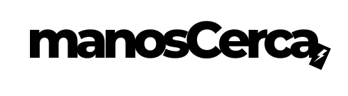

<div class="container">
    <header class="d-flex flex-wrap justify-content-center py-3 mb-4 border-bottom">
        <RouterLink to="/"
            class="d-flex align-items-center mb-3 mb-md-0 me-md-auto link-body-emphasis text-decoration-none">
            
        </RouterLink>

        <ul class="nav nav-pills">
            <li>
                <el-dropdown>
                    <el-button type="primary">
                        ¿Como funciona?<i class="el-icon-arrow-down el-icon--right"></i>
                    </el-button>
                    <el-dropdown-menu slot="dropdown">
                        <el-dropdown-item>
                            <RouterLink to="/vista-guia-para-familias" class="nav-link">Para familias</RouterLink>
                        </el-dropdown-item>
                        <el-dropdown-item>
                            <RouterLink to="/vista-guia-para-cuidadores" class="nav-link">Para cuidadores</RouterLink>
                        </el-dropdown-item>
                    </el-dropdown-menu>
                </el-dropdown>

                <el-dropdown>
                    <el-button type="primary">
                        Español<i class="el-icon-arrow-down el-icon--right"></i>
                    </el-button>
                    <el-dropdown-menu slot="dropdown">
                        <el-dropdown-item>
                            <RouterLink to="#" class="nav-link">Inglés</RouterLink>
                        </el-dropdown-item>
                    </el-dropdown-menu>
                </el-dropdown>
            </li>
            <!-- fin -->
            <li class="nav-item">
                <RouterLink to="/vista-login">
                    <span class="btn btn-re-purple  hero_cta" aria-current="page" data-bs-toggle="modal"
                        data-bs-target="#loginModal">
                        Accede
                    </span>
                </RouterLink>
            </li>
            <li class="nav-item">
                <RouterLink to="/vista-sign-up">
                    <span class="btn btn-purple hero_cta " data-bs-toggle="modal"
                        data-bs-target="#registerModal">Registrarse</span>
                </RouterLink>
            </li>
        </ul>
    </header>
</div>